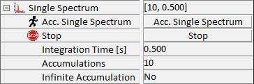

|
单光谱
|
此参数组允许使用连接到系统的 CCD 相机记录单光谱。单光谱采集只存储一个光谱。该光谱可以是多个光谱的累积，可以相加或计算平均光谱。单光谱采集由以下参数控制：

累积单光谱
按下此按钮，将使用当前参数集开始采集。
累积次数
此参数描述将使用积分时间累积多少个光谱。
积分时间 [s]
此参数定义一个光谱的积分时间。最小和最大积分时间取决于使用的 CCD 相机。
无限累积
如果选择此选项（是），CCD 相机将使用积分时间连续记录光谱，软件将累积它们，直到用户通过按任何停止触发按钮中断测量。
累积模式
此处可以在累积和平均之间切换累积模式。如果选择平均，则仅显示平均光谱；而如果选择累积，则光谱相加并显示为所有记录光谱的总和。